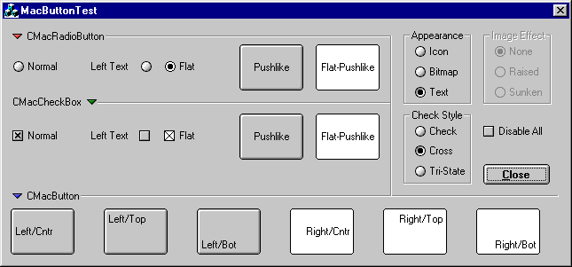

Элементы управления
наподобие Macintosh
Автор: Paul Meidinger.

Компилятор: Visual C++ 6.
Здесь представлены три класса, которые
позволяют создавать кнопки и другие элементы
управления похожие на те, которые используются в
операционной системе MacOS. Так же можно
использовать и "плоские" кнопки путём
установки стиля Flat в редакторе ресурсов.
Следующие функции используются в классе CMacButton:
- void SetBold(BOOL bBold = TRUE)
- BOOL GetBold()
Следующие функции используются в классах
CMacCheckBox и CMacRadioButton:
- void SetCheck(int nCheck)
- int GetCheck()
Следующие шаги показывают, как добавить
элемент CMacXXX в диалоговое окно:
- Добавьте нужные Вам файлы в Ваш проект.
- Добавьте нужные include в
заголовочный файл Вашего диалогового класса.
- Добавьте чекбоксы/радио кнопки/стандартные
кнопки в Ваш диалог через редактор ресурсов.
- Используйте ClassWizard для добавления переменных-членов
типа CMacButton, CMacCheckBox, или CMacRadioButton для
соответствующих элементов управления, которые
Вы добавили. Если классов CMacXXX нет в списке Variable
Type, то выберите CButton, и вручную измените типы в
заголовочном файле Вышего диалогового класса.
Также проделайте следующее:
- Добавьте поддержку для bitmap-ов на кнопках
- Добавьте поддержку горизонтального и
вертикального выравнивания
- Добавьте поддержку push-подобных чекбоксов и
радио кнопок
- Добавьте поддержку tri-позиционных чекбоксов и
радио кнопок
Downloads
Скачать демонстрационный
проект - 34 Kb
Скачать исходник - 14 Kb
|